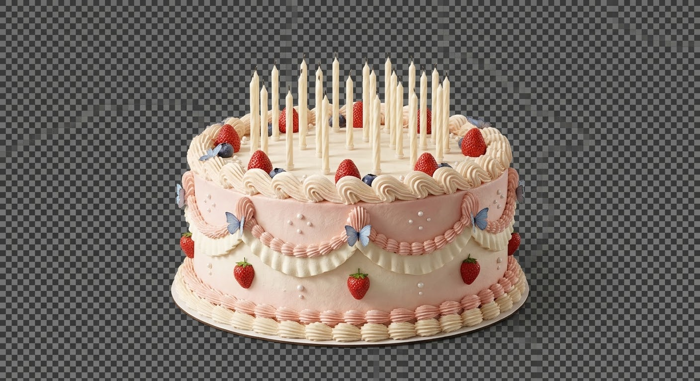
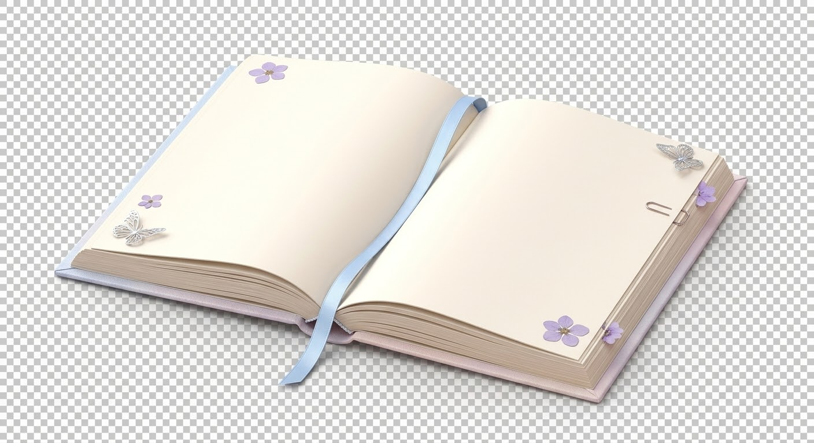

ماهوش
واسه دختری که تموم دنیاش رو نمیشه توی چند تا جمله جا داد...
ولی ماهو دلش خواسته یه گوشه از آسمون رو براش نگه داره. 💙
این دنیای کوچولو واسه توئه؛ هر وقت دلت خواست میتونی دوباره برگردی.
خانوم باهوش، آمادهای پاکت رو باز کنی؟ 🥹💙
اول یه چیستان کوچولو، بعد چندتا سؤال گوگولی که جوابشون رو فقط خودِ ماهوش بلده. قول میدم امتحان سختی نیست؛ هرجا هم خواستی، یه راهنمایی کوچولو کنارت هست. 🦋
دارم یه چیستان خوشمزه پیدا میکنم…
هر جوابی دلت میگه انتخاب کن؛ عجله نداریم. 🌷
عزیزِ دلِ ماهو کیه؟
جواب تایپی نداریم؛ فقط رو گزینهی موردعلاقهات بزن. اگه یه گزینه اشتباه بود، بازم یه فرصت قشنگ داری. 😌
یه جواب کوچولو انتخاب کن، ماهوشم. 🦋
رمز قبوله، خانومِ دلبر! 💙
پاکت بالاخره باز شد… حالا وقتشه نامهای رو بخونی که ماهو با کلی ذوق فقط واسه تو نوشته.
ماهوشِ من، مائدهی باهوشِ من... 💙
ماهــــوش قشنگم، دخملِ کوشولوی من... 🥹❤️ تولدت بهونهست که یه بار دیگه با ذوق بشینم ازت بگم؛ از چیزایی که شاید وسط درس و شلوغی و خندههامون، اونقدری که توی دلم جمع شدن بهت نگفته باشم. کاش میشد یه لحظه از چشمهای من به خودت نگاه کنی؛ اونوقت میدیدی همین ذوقکردنهات، «وای» گفتنهات، مهربونیهات و حتی ریزهکاریهایی که شاید خودت خیلی بهشون فکر نکنی، چقدر توی دل ماهو جا باز کردن. 🫠💗
میدونی چی بیشتر از همه دلم رو میبره؟ اینکه هرچی بیشتر میشناسمت، بیشتر میفهمم خوشگلیِ تو فقط به اون چشمهای ناز و لبخند قشنگت نیست؛ هرچند که خب، دربارهی همون دوتا هم حرف دارم که انگار تمومی نداره! 😂❤️ مهربونیات، صبوریات، دلسوزیات، اینکه چقدر خوب میفهمی و حواست به بقیه هست و اون قلب لطیفت، هر بار یه دلیل تازه میدن که بیشتر از قبل دوستت داشته باشم. انگار خدا قشنگترین صفتهاشو جمع کرده گذاشته توی وجود دخمل کوچولوی من؛ بعد هم گفته حالا ببینیم ماهو چطوری قراره از این همه ناز جون سالم به در ببره! 🙂↔️❤️
واسه سال جدیدت فقط موفقیتهای بزرگ و خبرهای خفن نمیخوام. دلم میخواد کلی لحظهی کوچولو داشته باشی که از ته دل ذوق کنی؛ از اون ذوقهایی که چشمهات برق میزنه و خودت هم نمیتونی جلوی خندهات رو بگیری. دلم میخواد وسط یه روز معمولی یه خبر خوب غافلگیرت کنه، یه آهنگ درست همون لحظهای پخش بشه که لازم داری، یا یه اتفاق کوچولو کل روزت رو قشنگ کنه. امیدوارم نوزدهسالگیات پر باشه از همین خوشحالیهای یهویی که بعداً با ذوق میای برام تعریفشون میکنی. 🌷🦋
چشمقشنگم، دلم نمیخواد فقط از دور تماشاچی روزای خوبت باشم. وقتی از خوشحالی ذوق میکنی، منم میخوام از دیدن ذوقت ذوق کنم؛ وقتی خستهای و دلت میخواد غر بزنی، با حوصله به حرفات گوش بدم؛ وقتی چیزی اونطوری که میخواستی پیش نمیره، کنارت فکر کنیم ببینیم چی میشه کرد. حتی اگه یه روز نه حوصلهی درس داشته باشی، نه حرفزدن و نه بدونی چرا دلت گرفته، لازم نیست پیش من تظاهر کنی که همهچی خوبه. دلم میخواد همونجوری که هستی جا داشته باشی؛ با خندههات، بغضهات، سکوتت و همهی حالوهوات. ❤️
گاهی آینده رو تصور میکنم و میبینم سالها گذشته، ولی هنوز وقتی یه چیز قشنگ میبینم اولین فکرم اینه که «ماهوش باید اینو ببینه!»؛ وقتی یه اتفاق بامزه میافته، دلم میخواد زودتر برات تعریف کنم و وسطش منتظر خندههات بمونم. دلم میخواد از اون خاطرههایی داشته باشیم که یکیش رو تعریف میکنیم و یهو یاد یه ماجرای دیگه میافتیم و کلاً از بحث اصلی پرت میشیم. بعد آخرش یکیمون بگه «وای، یادته؟!» و هر دومون بزنیم زیر خنده. همین چیزای ساده وقتی تو توشون باشی، واسه من میشن خاطرههایی که دلم میخواد نگهشون دارم. 🫠💗
یکییدونهام، امیدوارم امسال بیشتر از همیشه به خودت افتخار کنی؛ نه فقط وقتی یه نتیجهی عالی میگیری یا یه کاری رو بینقص انجام میدی، بلکه وقتی با وجود خستگی ادامه میدی، وقتی از اشتباهت یاد میگیری، وقتی دوباره از اول شروع میکنی و حتی وقتی میفهمی الان وقت استراحته و به خودت سخت نمیگیری. تو لازم نیست هر روز به دنیا ثابت کنی چقدر باارزشی؛ من دلم میخواد خودت هم کمکم همون چیزای قشنگی رو توی خودت ببینی که من میبینم. دستاوردات یه بخش از قصهتن، نه تمومِ تو.
راستی، یه حسابوکتاب کوچولو هم باهات دارم! 😈😂 به ازای هر روزی که ازم نشنیدی چقدر دوستت دارم، یه شاخه گل بهت بدهکارم. اینطوری هم حرفهای نگفتهم رو یه جوری جبران میکنم، هم آخرش بهونه دارم دوباره برات گل بگیرم. البته خودم میدونم حتی اگه یه روز همهی بدهیهام رو صاف کنم، فرداش یه بهونهی تازه پیدا میکنم؛ آخه وقتی آخر هر بهونهای میرسم به تو، مگه میشه بیخیالش شد؟ خانومِ گلِ زندگی، قرارداد رو قبول داری؟ 🙂↔️🌷
ماهوشم، من هنوز کلی حرف دارم که بعضی وقتها از خجالت نمیدونم از کجا شروعشون کنم. ممکنه وسط گفتن یه جمله یادم بره چی میخواستم بگم، یا اونقدر ذوق کنم که حرفام قاطی بشن؛ ولی پشت همهشون یه چیز روشنه: دلم میخواد دوستداشتنم فقط توی حرف نمونه. میخوام توی گوشدادن، توی یادت نگهداشتن چیزای کوچیکی که برات مهمن، توی حمایتکردن و توی تلاش واسه قشنگترشدن روزهات هم معلوم باشه. ❤️
تولدت مبارک، قشنگترین دلیل ذوقِ ماهو. امیدوارم نوزدهسالگیات پر از خندههای بیهوا، رؤیاهای نزدیکتر، تجربههای تازه و آدمایی باشه که قدر قلب قشنگت رو میدونن. منم دلم میخواد سهمم از این سالها این باشه که منم کنار ذوقت ذوق کنم، به حرفات گوش بدم و هر از گاهی یه کاری کنم که با خودت بگی «وای، چقدر خوشحالم که این اتفاق افتاده!» با کلی حرف نگفته و یه دنیا ذوق واسه ادامهی قصهمون، ماهو. (قول میدم دفعهی بعد هم خجالتی باشم، ولی قول میدم کمتر فرار کنم! 😂❤️) 💙🦋
یه آرزوی فقط واسه خودت، ماهوشم ✨
چشمقشنگم، این کیک نوزدهسالگیت با همون شمعهایی که توی خودِ عکس هستن، فقط یه بهونهست که یه لحظه برای آرزوی خودت نگه داری. 💙 به چیزایی فکر کن که پشت سر گذاشتی، چیزایی که یاد گرفتی و ذوقهایی که هنوز منتظر توئن. لازم نیست آرزوت رو بلند بگی یا به کسی توضیحش بدی؛ فقط یه گوشهی قشنگ توی دلت براش باز کن. هر وقت آماده بودی، کیک رو لمس کن تا یه پیام کوچولو از طرف ماهو برات باز بشه. 🥹❤️

یه آرزوی کوچولو بساز؛ لازم نیست کسی جز خودت ازش خبر داشته باشه. 🥹❤️
نوزده ستاره، واسه نوزده سالِ تو ✨
ماهوشم، واسه نوزدهسالگیت نوزده تا ستارهی رنگی چیدم؛ هرکدومشون یه حرف کوچولو از دل ماهو رو برات نگه داشتن. نه ردیف خشک دارن، نه شمارهای که بخواد نظم آسمون رو به هم بزنه؛ مثل آسمون شب، هرکدوم جای خودشون میدرخشن و رنگ خودشون رو دارن. هرکدوم رو لمس کنی، یه پیام جدا برات باز میشه؛ یه حرف دربارهی قلب مهربونت، ذوقت، رؤیاهایی که داری یا چیزایی که شاید خودت کمتر بهشون توجه کنی، ولی واسه من خیلی عزیزن. 🌌💗
هر حالی داری، بیا همونجوری که هستی، ماهوشم 🫂
ماهوشِ من، اینجا لازم نیست واسه دلت توضیح آماده کنی یا حتماً بدونی چرا خستهای و دلت گرفته. این کادر رو واسه همون وقتایی ساختم که فقط دلت میخواد یکی یه حرف درستوحسابی بهت بزنه. خستهای؟ دلت شور میزنه؟ دلت گرفته؟ یا فقط یه ذره ذوق و لبخند میخوای؟ از منوی پایین همین کادر، حالت رو انتخاب کن تا یه پیام مخصوص همون حال برات بیاد؛ هر بار هم میتونی یکی دیگه بخونی. قرار نیست با خوندن چند خط فوراً حالت عوض شه؛ فقط میخوام وسط همون حالی که داری، یادت بیاد یه نفر از ته دل براش مهمی. 🥹❤️
خب خانوم نازنازی، حالا از منوی پایین یکی رو بزن؛ هر کدوم حرفهای خودش رو داره و هر بار هم یه پیام تازه منتظرته. 🫧
پروندههایی که فقط با اجازهی خانومِ نازنازی باز میشن 😂
دفتر کوچولوی ماهو و ماهوش 📖💙
ماهوشم، این دفتر یه مشت خاطرهی معمولی نیست؛ تیکههای کوچولویی از روزان که وقتی دوباره یادشون میافتم، ناخودآگاه لبخند میاد رو صورتم. 🥹💙 هر عکسی رو لمس کنی، یه کاغذ از دفترمون باز میشه و همون خاطره رو برات تعریف میکنم. ضربدر گوشهش هم همیشه هست که راحت برگردی و بقیهی قصه رو بخونی. 🦋

روی هر عکس بزن تا خاطره روی کاغذ باز بشه؛ توی گوشی برای دیدن نیمهی دیگهی کتاب، آروم افقی بکش.
صندوق پستی ماهوش
ماهــــوشم، این صندوق واسه حرفهاییه که شاید وسط روز بین خندهها، درسها و شلوغیها جا نشن. میتونی از چیزی که ذوقت رو برده بنویسی، از چیزی که ناراحتت کرده، از یه فکر نصفهنیمه، یه قرار که دوست داری، یه سورپرایز یا حتی درخواست رسمی پاستیل و هدیه با مهر کمیتهی نازنازیبودن! 😂💌 لازم نیست جملههات مرتب باشن یا از اول بدونی چی میخوای بگی؛ همونطور که توی ذهنتن بنویس. دلم میخواد این صفحه جایی باشه که حرفات لازم نباشه مرتب و کامل باشن تا برام ارزش داشته باشن؛ هرچی برام بنویسی، کمکم میکنه بهتر بفهمم این روزا توی دنیای قشنگت چه خبره.
رؤیاهایی که دلم میخواد با هم براشون قدم برداریم 🌙
ماهوشــــم، وقتی به آینده فکر میکنم، فقط به یه روز بزرگ و رسیدن به یه هدف فکر نمیکنم. دلم میخواد توی مسیرش هم کلی لحظهی قشنگ داشته باشی؛ روزایی که یه چیز تازه یاد میگیری، بعد از کلی فکر بالاخره جواب یه سؤال رو پیدا میکنی و با همون ذوق دوستداشتنیات میای برام تعریف میکنی. حتی اگه یه روز مسیرت عوض شد یا فهمیدی چیزی که قبلاً میخواستی دیگه دلت رو نمیبره، امیدوارم با خیال راحت راه تازهات رو پیدا کنی. قرار نیست همین الان جواب همهچی رو بدونی؛ میتونی کشف کنی، نظرت رو عوض کنی و کمکم بفهمی چی واقعاً خوشحالت میکنه. ❤️ دلم میخواد وقتی از رؤیات برام حرف میزنی، لازم نباشه از قبل نگران باشی بقیه چقدر بزرگ یا منطقی میبیننش. این زندگی مال خودته، ماهوشم؛ پس آرزوهات هم باید از دل خودت بیان، نه فقط از چیزی که بقیه ازت انتظار دارن. میتونی بلندپرواز باشی و با این حال خسته بشی؛ میتونی واسه چیزی با تموم وجودت تلاش کنی و یه روز هم فقط دلت بخواد نفس بکشی و استراحت کنی. اینا با هم تناقض ندارن، قشنگم. من دلم میخواد هم واسه رسیدن به چیزایی که دوست داری ذوق کنی، هم توی راه رسیدن بهشون خودت رو فراموش نکنی. 🌙 یه تصویر از آینده هست که خیلی دلم رو میبره: سالها گذشته، تو هنوز واسه یه چیز کوچولو ذوق میکنی و من هنوز اولین نفریام که دلم میخواد برات تعریف کنم امروز چی دیدم. خاطرههامون اونقدر زیاد شدن که وسط تعریف یکی، یه خاطرهی دیگه یادمون میاد و کلاً از بحث اصلی پرت میشیم! 😂 دلم میخواد یه روز برگردیم و به مسیرمون نگاه کنیم؛ به چیزایی که یه زمانی ازشون میترسیدیم، به آرزوهایی که فقط دربارهشون حرف میزدیم و به قدمهایی که کمکم ما رو بهشون نزدیکتر کردن. بعد یکیمون بگه «وای، یادته اون موقع چی فکر میکردیم؟» و هر دومون بخندیم. دلم میخواد به مقصدات برسی، ولی بیشتر از اون دلم میخواد توی این راه از زندگیکردن جا نمونی و وقتی به عقب نگاه میکنی، به خودت و راهی که اومدی افتخار کنی. 🦋💙
یه پلیلیست واسه هر حالوهوا
هفت تا آهنگ برات گذاشتم، ماهوشم؛ واسه وقتایی که دلت انرژی میخواد، واسه وقتی که یه ملودی تو رو یاد یه خاطره میندازه یا وقتی فقط میخوای چند دقیقه دنیا آرومتر باشه. خودت هر کدوم رو دوست داشتی انتخاب کن و اگه خواستی اول یه یه تیکهی کوتاه ازش گوش بده. دلم میخواد هر بار که دوباره یکی از این آهنگها رو میشنوی، یه حس قشنگ هم کنارش برگرده؛ انگار یه گوشه از حالوهوای خودت رو بین آهنگها نگه داشتیم. 🎧❤️
به دنیا قشنگتر 💙
طلسم مخصوص ماهوش؛ یه چراغ کوچولو که از توی خودت روشن میمونه ✨
ماهوشِ من، این طلسم قرار نیست چیزی رو از بیرون عوض کنه؛ قرارِ کوچولوش اینه که وقتی صدای سختگیرِ توی ذهنت بلند شد، یه صدای مهربونتر هم کنارش داشته باشی. یه صدایی که بهت یادآوری کنه تو فقط نمرههات، کارایی که انجام میدی یا روزایی که همهچی طبق نقشه پیش میره نیستی. تو همون دختری هستی که ذوقکردنش میتونه یه لحظه رو روشن کنه، قلبش واسه آدما جا باز میکنه و هنوز حتی چیزای زیادی واسه کشفکردن پیش روشه. ❤️
هر بار این طلسم رو میخونی، سه تا چیز رو یادت نگه دار: اول اینکه لازم نیست واسه دوستداشتنیبودن همهچیز رو بینقص انجام بدی؛ دوم اینکه رؤیات میتونن با سرعت خودت بزرگ بشن؛ سوم اینکه حتی روزی که اتفاق خاصی نمیافته هم میتونه یه تیکهی عزیز از زندگیات باشه. طلسمت اینه: با خودت همونطور حرف بزن که با کسی حرف میزنی که از ته دل دوستش داری. اگه اشتباه کردی، ازش یاد بگیر، نه اینکه تموم خودت رو واسهش زیر سؤال ببری. اگه خسته شدی، مکث کن؛ اگه ذوق کردی، ذوقت رو پنهان نکن؛ و اگه راهت طولانی شد، یادت نره مسیرهای مهم گاهی با قدمهای کوچیک ساخته میشن. تو قرار نیست هر روز جادو کنی؛ گاهی همین که به خودت فرصت میدی دوباره بلند شی، خودش قشنگترین جادوی دنیاست. 🪄💗
دوستت دارم، ماهوش
ماهــــوشم، دلم میخواد این صفحه فقط واسه روزای خاص نباشه. میخوام هر وقت بیدلیل دلت خواست برگردی، بدونی لازم نیست اتفاق بزرگی افتاده باشه؛ شاید فقط بخوای یه آهنگ گوش بدی، رنگ آسمون رو ببینی یا چند ثانیه از شلوغی فاصله بگیری. بعضی جاها از آدم چیزی نمیخوان؛ نه لبخند زورکی، نه جواب آماده، نه اینکه حالش رو واسه کسی توضیح بده. فقط یه گوشهان که میگن: همینطوری که هستی، خوش اومدی. 💙
توی روزایی که از صبح هزار تا کار داری، عصرایی که دلت یه خبر خوب میخواد و شبایی که فکرت ولکن نیست و حتی توی لحظههایی که فقط یه «وای» کوچولو واسه تعریفکردن داری؛ امیدوارم این گوشه از دنیای ماهو هر بار یادآورت بشه که خودِ تو، نه فقط روزای خوبت، برام عزیزی. 🦋
تنظیمات ماهوش 🌙
اینجا فرماندهی آسمون خودتی، ماهوشم. میتونی تم رنگی رو عوض کنی، ستارههای ریز رو روشن و خاموش کنی، امضای کمرنگ ماهو و ماهوش رو ببینی یا پنهان کنی و نورِ پسزمینه رو گرمتر یا شبانهتر کنی. انتخابهات واسه دفعهی بعد هم میمونن؛ پس هر وقت برگشتی، آسمونت همون حالوهوایی رو داره که بیشتر به دلت میشینه. 🌙✨
رنگ پنلها، دکمهها، حاشیهها، پیامها و سایهها هماهنگ میشن؛ انتخابت هم ذخیره میمونه.
اگه یه تصویر رو بیشتر دوست داری، میتونی همون رو واسه همهی مرحلهها ثابت نگه داری؛ واسه برگشتن به تصویرهای اصلی، گزینهی اول رو انتخاب کن.
آهنگی رو که دوست داری از اینجا انتخاب کن؛ هر وقت هم خواستی، از پلیر پخشش کن.
اندازهی نوشتهها عوض میشه تا راحتتر بخونیشون.
اگه حرکتها اذیتت میکنن، این گزینه رو روشن کن تا صفحه آرومتر بشه.
صدا رو به اندازهای تنظیم کن که به گوشت و حالوهوات خوش بیاد.
اگه تیکش رو بزنی، دفعهی بعد مستقیم وارد سایت میشی.
دوستت دارم، ماهوشِ من
ماهوشــــم، قشنگترین دختر دنیای من، اگه یه روز دوباره اومدی این صفحه رو خوندی، دلم میخواد قبل از هر چیزی یادت بیاد که لازم نیست همیشه سرحال و خندون باشی تا دوستداشتنی بمونی. روزایی هم که خستهای، حوصله نداری یا خودت هم نمیدونی چرا دلت گرفته، باز هم همون ماهوشی که اینهمه برام عزیزه. تو فقط چشمهای خوشگل و لبخند قشنگت نیستی؛ تو تموم ذوقهات، فکرهات، شوخیهات، دلنازکیهات، رؤیاهات و اون چیزای کوچولویی هستی که فقط خودت میدونی چقدر برات مهمن. من همهی این خودِ واقعیات رو دوست دارم، نه فقط روزایی رو که همهچیز خوب پیش میره. ❤️
گاهی به این فکر میکنم چند سال دیگه چه چیزایی برامون عادی شده باشه؛ اینکه یه اتفاق بامزه ببینم و تا برات تعریفش نکنم آروم نگیرم، اینکه از یه روز معمولی برگردیم و کلی اتفاق ریز و بامزه رو واسه هم تعریف کنیم، یا وسط یه حرف ساده تو همون «وای» همیشگیات رو بگی و من فقط از شنیدنش ذوق کنم. دلم میخواد یه عالمه خاطره داشته باشیم که واسه تعریفکردنشون وقت کم بیاریم؛ از اون خاطرههایی که شاید واسه بقیه چیز خاصی نباشن، ولی واسه ما یه دنیا معنی دارن. چون قشنگی زندگی واسه من فقط روزای مهم و اتفاقهای بزرگ نیست؛ گاهی یه لحظهی معمولیه که چون تو توش هستی، میشه چیزی که دلم نمیخواد فراموشش کنم. 🫠💗
دلم میخواد به هر رؤیایی که واقعاً از ته دلت میخوای، نزدیکتر بشی و یه روز وقتی به عقب نگاه میکنی، فقط به نتیجهات افتخار نکنی؛ به خودت هم افتخار کنی که با وجود خستگی ادامه دادی، وقتی لازم شد از نو شروع کردی و اجازه ندادی سختی راه تموم ذوقت رو ازت بگیره. من دوست دارم شریک ذوقت باشم، وقتی ناراحتی با حوصله به حرفات گوش بدم و وقتی دنیا اونقدری که باید باهات مهربون نیست، سهم کوچیک خودم رو از دنیا برات گرمتر کنم. نه با وعدههای عجیب و غریب؛ با کارای واقعی؛ با اینکه حواسم بهت باشه و چیزایی که برات مهمن یادم بمونه. ❤️
ماهوش من، کلی حرف دارم که هنوز درست بلد نیستم روبهروت بگم؛ گاهی خجالت میکشم، گاهی وسط جمله یادم میره چی میخواستم بگم و گاهی فقط از شدت ذوق نمیدونم از کجا شروع کنم. 😭😂 ولی اگه بخوام همهشون رو توی یه جمله جا بدم، میشه این: دلم میخواد هر روز یه بهونهی کوچیک پیدا کنم که نشونت بدم چقدر برام عزیزی؛ یه حرف بامزه، یه گوشدادن درستوحسابی، وقت گذاشتن واسه چیزی که دوست داری یا یه خاطرهی تازه که بعدها با یادش لبخند بزنیم. شاید نتونم همهی دنیا رو قشنگ کنم، ولی دلم میخواد یه گوشهی کوچیک از دنیای تو رو، هرچند که کم، قشنگتر کنم. 🥹❤️
تولدت مبارک، ماهوشم؛ واسه نوزدهسالگیات و واسه تموم فصلهایی که هنوز نرسیدن. امیدوارم کلی چیز واسه ذوقکردن داشته باشی، به آرزوهات نزدیکتر بشی، با خیال راحت استراحت کنی و هر سال بیشتر از قبل خودت رو بشناسی و دوست داشته باشی. ❤️
منم دلم میخواد سهمی از خاطرههای قشنگت باشم؛ نه فقط توی روزای خاص، که توی همون روزای معمولیای که بعدها میفهمیم چقدر عزیز بودن. دوستت دارم، با کلی حرف نگفته و یه عالمه ذوق واسه ادامهی قصهمون. ❤️🦋